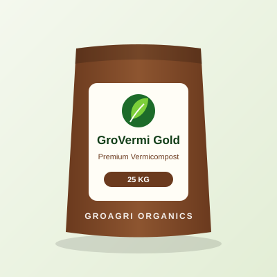

Grow Healthier Crops with Nature's Nutrition
GROAGRI ORGANICS brings farmers premium organic manures, bio-fertilizers and growth promoters that restore soil health, increase yield and protect the environment.

🌿 Chemical-free 🚜 Farmer-testedBetter Soil. Better Yield. Better Future.
Every GROAGRI product is made to feed the soil as well as the plant – so your farm stays productive season after season.
100% Organic
Made from natural, plant, animal and microbial sources with no synthetic chemicals.
Higher Yields
Balanced nutrition and active microbes help crops grow stronger and produce more.
Quality Assured
Every batch is checked for nutrient content, moisture and microbial count.
Expert Guidance
Free advice on dosage, crop schedules and soil improvement from our team.

Rooted in Kaniyur, Growing with Farmers
GROAGRI ORGANICS was started with a simple belief – healthy soil grows healthy food. We produce and supply organic fertilizers that help farmers move away from harmful chemicals without compromising on yield.
- Organic manures, bio-fertilizers & liquid tonics
- Suitable for field crops, plantations and home gardens
- Fair prices and direct supply to farmers & dealers
Popular Organic Fertilizers
From soil conditioners to quick-acting liquid tonics – everything your crop needs, naturally.
Simple Steps to a Healthier Farm
Tell Us Your Crop
Share your crop, soil type and acreage with our team.
Get a Plan
We recommend the right product mix and dosage.
Fast Delivery
Products delivered to your farm or nearest dealer.
See Results
Healthier soil, greener crops and better harvests.
Ready to Go Organic?
Call us today for product prices, bulk orders and dealership enquiries.